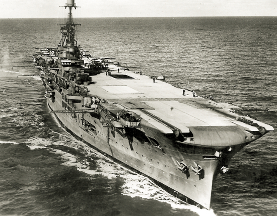

PŁYWAJĄCE LOTNISKA
Miejsca bitew na Pacyfiku znajdowały się tysiące kilometrów zarówno od brzegów USA, jak i Japonii. Odległość od USA do Japonii wynosi ponad 8000 km.
Do pokonania tak dużych odległości nie wystarczała flota powietrzna.
Kluczowe znaczenie w tej sytuacji miały lotniskowce - specjalne okręty wojenne, które przewoziły samoloty pokładowe w najodleglejsze zakątki oceanu.
Zasięg rażenia myśliwców i bombowców startujących z pokładów lotniskowców wynosił nawet 500 km, dziesięciokrotność zasięgu największych pancerników.
Przez to lotniskowce stały się najgroźniejszymi jednostkami na akwenach Pacyfiku.
Oczywiście stały się też największym celem wrogich ataków, więc były wyposażone w dziesiątki, czasami nawet setki, mocnych dział przeciwlotniczych.